PROJECT SHOWCASE
A collection of my technical art, lighting, and optimization work.
01. Visual Fidelity
URP/HDRP
Lighting
Post-Processing
Focusing on high-end realism within Unity. These shots demonstrate my ability to handle complex baked lighting scenarios, custom shader creation, and mood-setting post-processing.
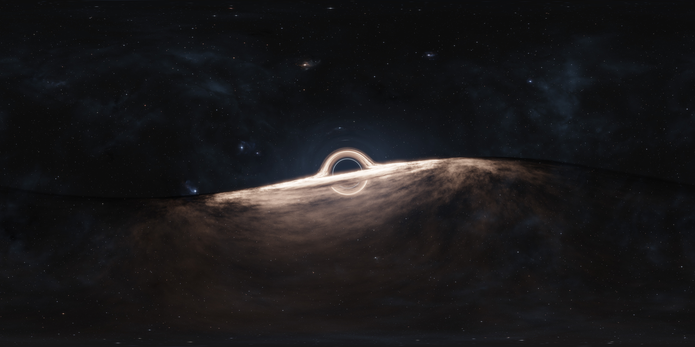
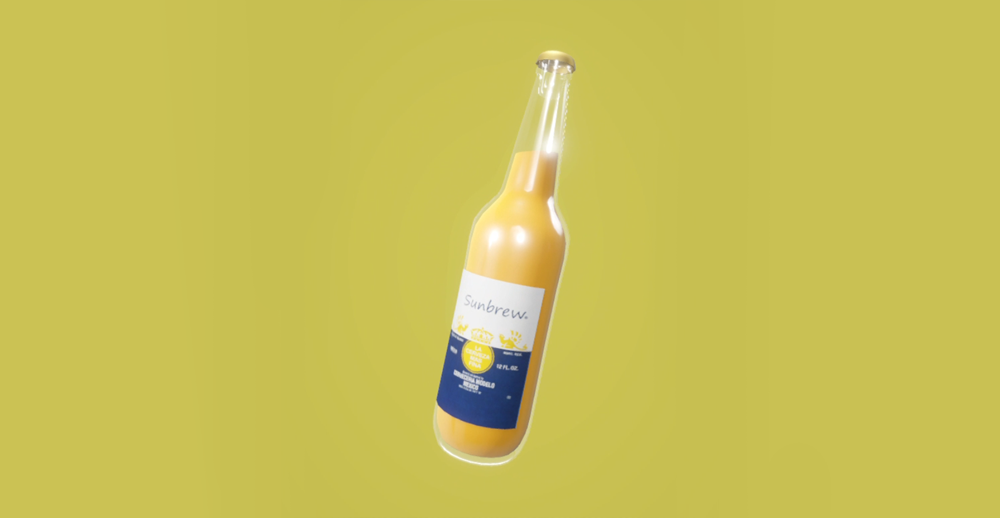
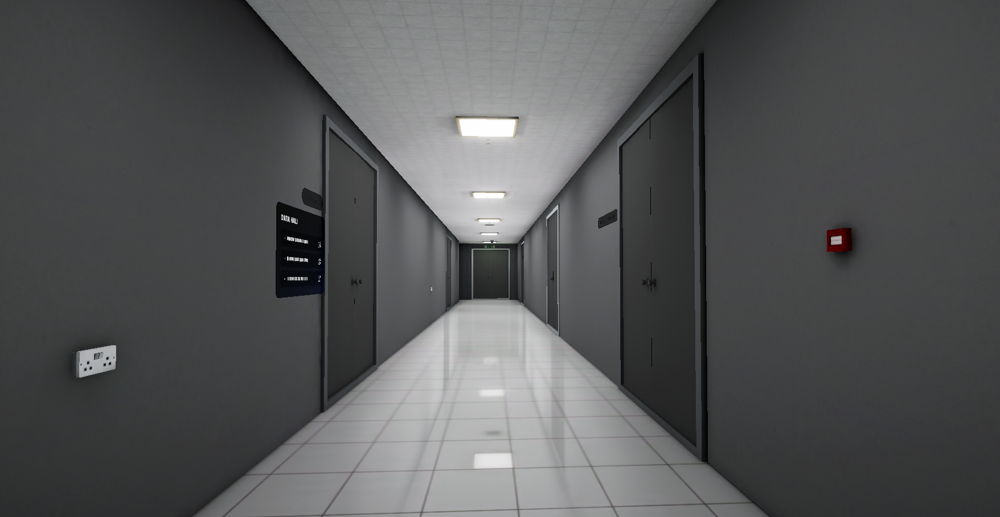
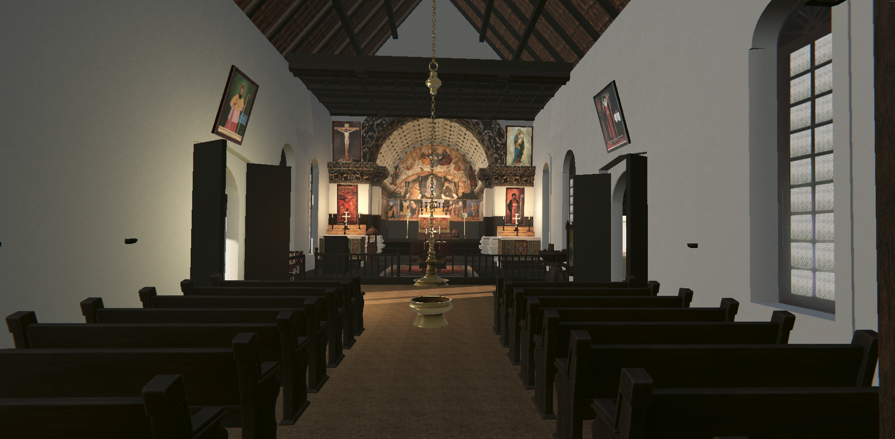
02. Pipeline Optimization
Profiling
LODs
Occlusion Culling
Environment optimization for mobile and VR platforms. Visuals showing wireframes, LOD transitions, and profiling stats before/after optimization.
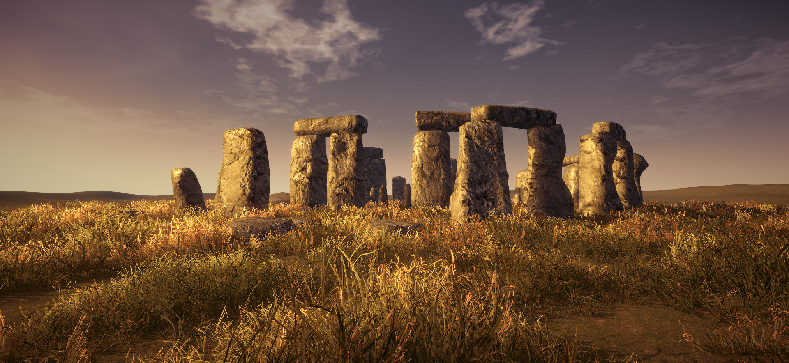
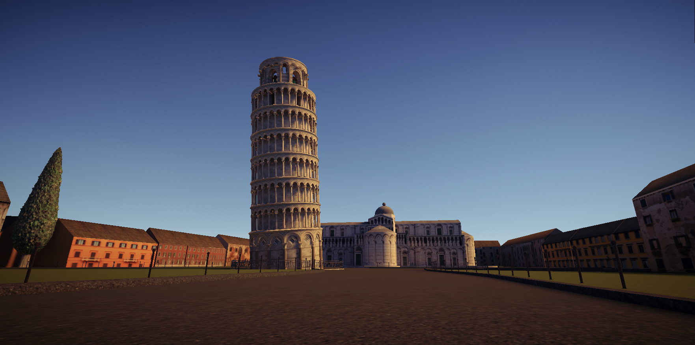
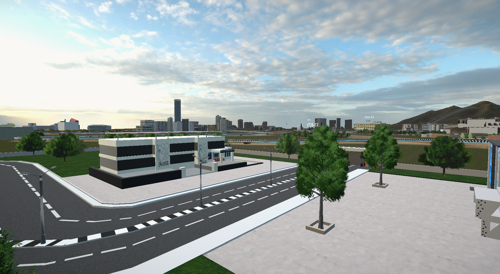
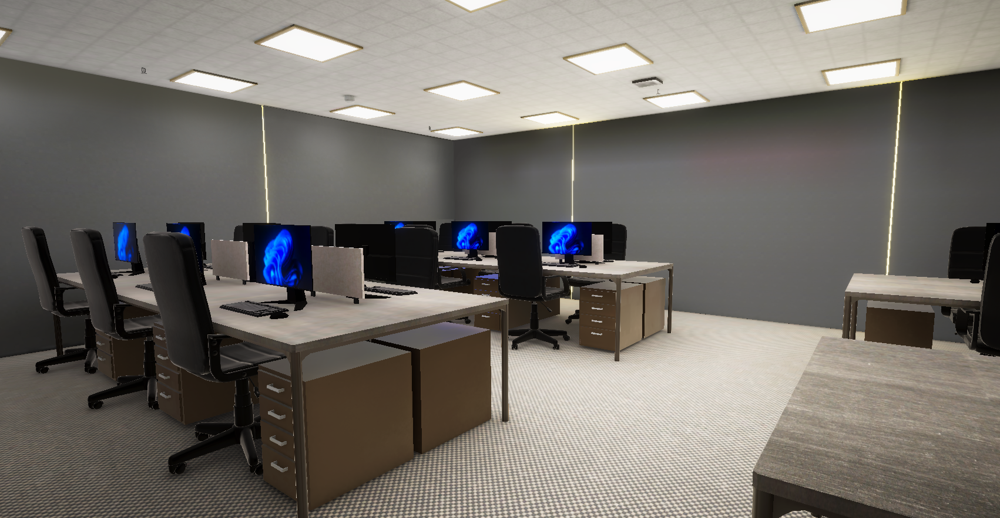
03. 3D Modelling & Props
Maya
Substance Painter
Hard Surface
Game-ready assets with clean topology and optimized UV maps. Showcasing modular environment pieces and detailed props.
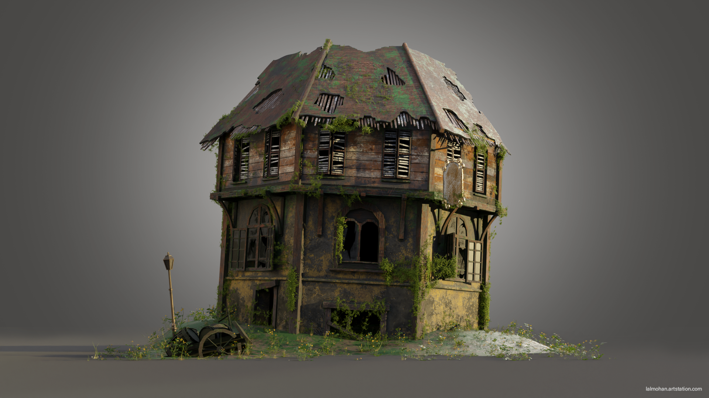
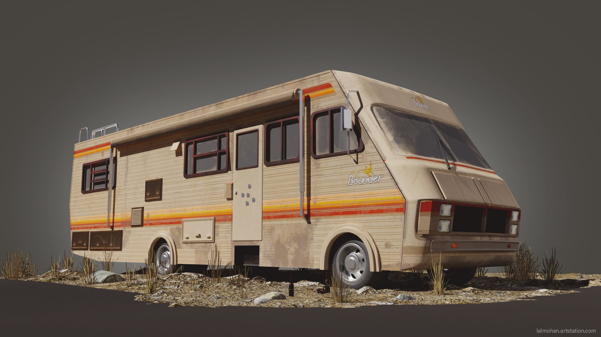


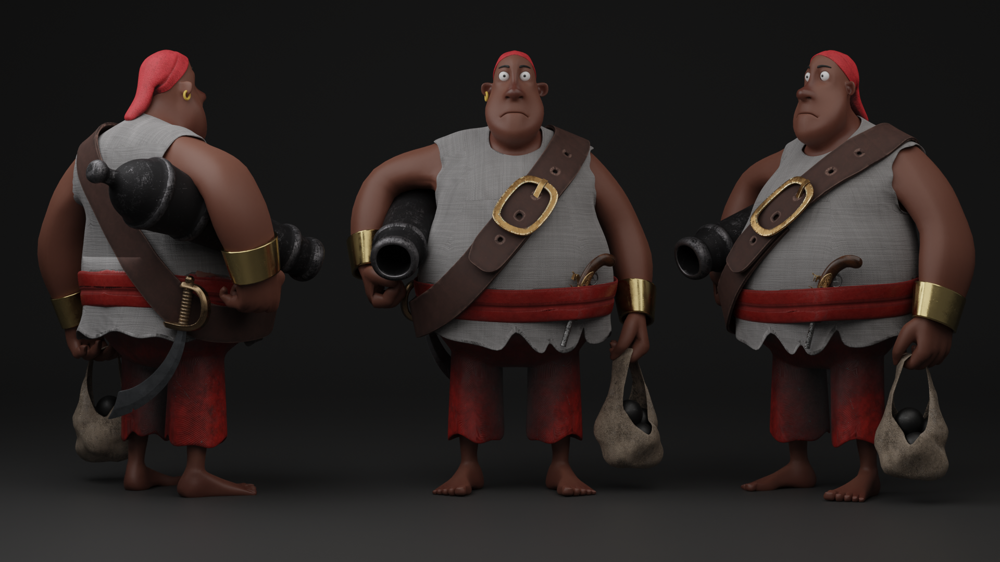
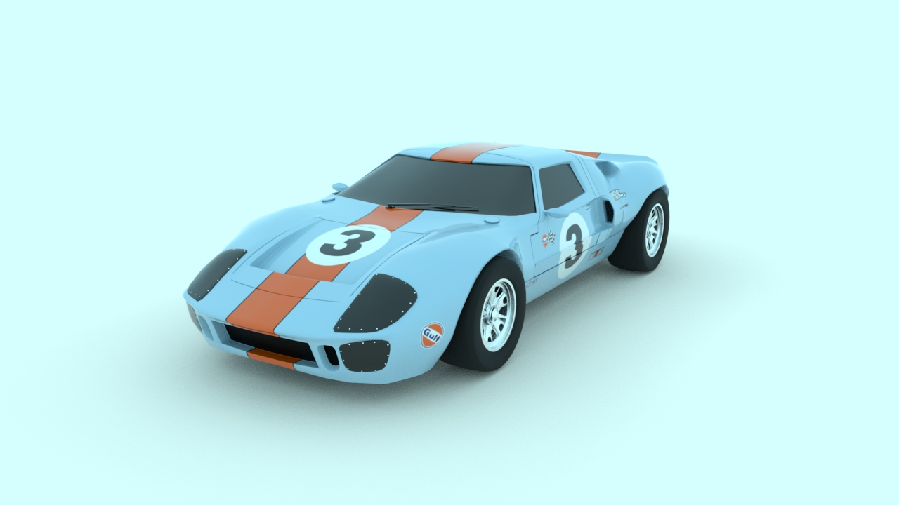